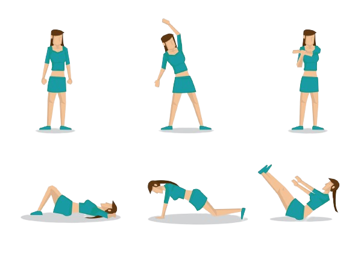
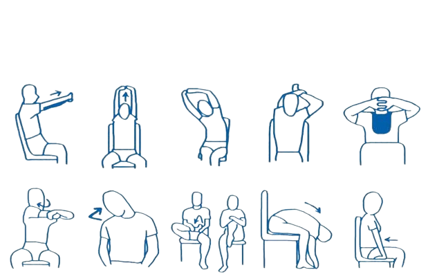

Exercícios físicos: a chave para uma vida mais saudável e feliz
A prática regular de
exercícios físicos é essencial para manter a saúde e o bem-estar em todas as fases da vida. Seus benefícios
são diversos e comprovados cientificamente, tanto para o corpo quanto para a mente
O mercado de tecnologia oferece diversas vantagens aos seus profissionais, como salários atrativos, oportunidades de crescimento e um ambiente dinâmico e inovador. No entanto, essa realidade também traz consigo desafios que podem impactar negativamente a saúde física e mental dos trabalhadores
Mesmo com a agenda apertada, é importante reservar um tempo para se dedicar à atividade física. Comece devagar e aumente a intensidade gradualmente: Se você não está acostumado a se exercitar, comece com caminhadas leves ou alongamentos e vá aumentando a intensidade gradativamente
Levante-se e caminhe algumas vezes por hora, faça alongamentos ou exercícios leves na cadeira. Utilize aplicativos de celular para monitorar seu progresso: Existem diversos aplicativos que podem te ajudar a monitorar seu progresso nos exercícios físicos, definir metas e se manter motivado
Lembre-se: Pequenas mudanças no seu estilo de vida podem fazer uma grande diferença na sua saúde e bem-estar. A atividade física é um investimento na sua saúde e no seu bem-estar. Comece hoje mesmo a se movimentar e desfrute dos muitos benefícios que ela tem a oferecer!